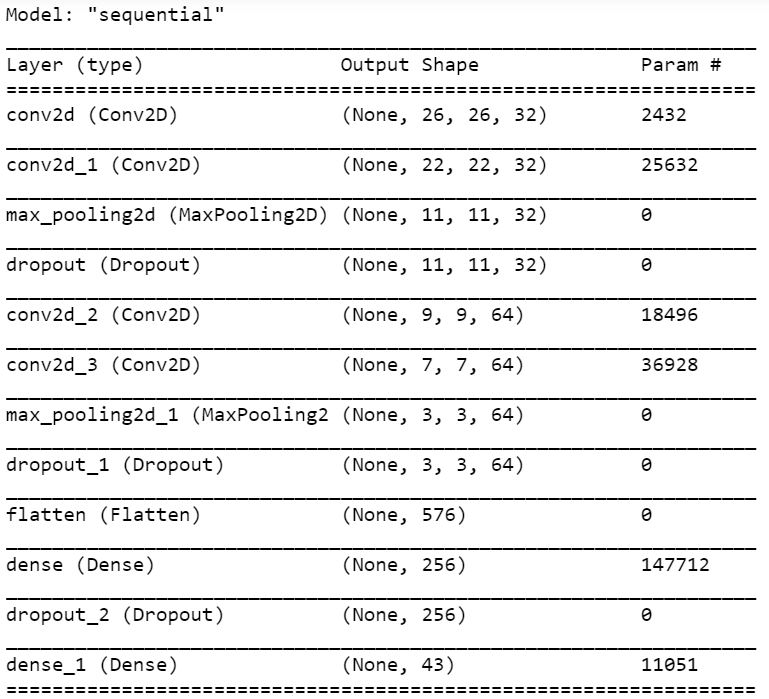
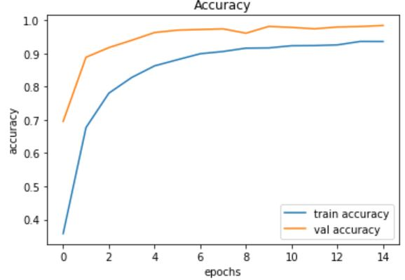

Developed by Shlok Shah
(Upload RGB images only)
Using CNNs to identify traffic signs and classify them in one of 43 categories.
| Accuracy: | ~95% |
| Framework: | Keras integrated in TensorFlow 2.2.0 |
| Dataset: | GTSRB - German Traffic Sign Recognition Benchmark hosted on Kaggle. It has a total of 39,209 images for training, stored in 43 subfolders. Each training image is 3 channel (RGB) of size 30x30. For testing, there are 12,631 images. |
| Model summary: |  |
| Model accuracy: |  |
| Source Code: | GitHub Repository |